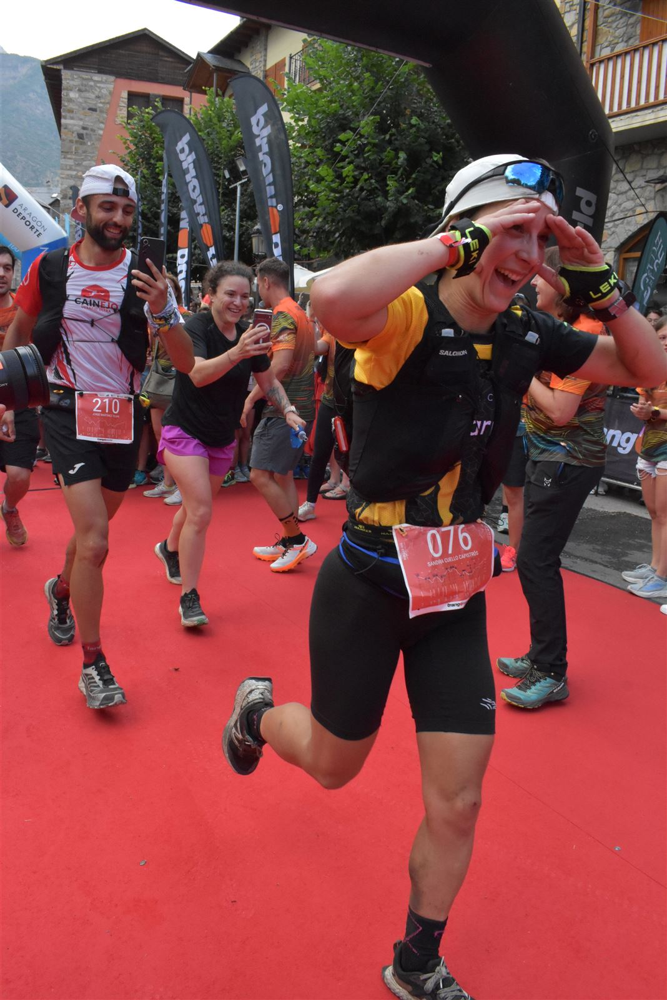

Prensa
En los medios
- Heraldo de Aragón · 2025
Paco Rodríguez y Sandra Cuello vencen a los elementos en el Gran Trail Aneto-Posets
Leer en heraldo.es ↗ - El Periódico de Aragón · 2025
Sandra Cuello, la conquistadora del Pirineo
Leer en elperiodicodearagon.com ↗ - Diario del AltoAragón · 2025
Sandra Cuello: “Tenía que acabar fuera como fuera”
Leer en diariodelaltoaragon.es ↗ - Desde Monegros
Sandra Cuello, de Robres, gana la Gran Trail Aneto-Posets: “Solo llegar ya era un sueño”
Leer en desdemonegros.com ↗ - Carreras de Montaña · 2025
Gran Trail Aneto-Posets 2025: resultados
Leer en carrerasdemontana.com ↗ - FEDME
Marc Bernades y Sandra Cuello conquistan la Otso Travessa d'Encamp y suman en la Copa de España de Ultra Trail
Leer en fedme.es ↗ - La Comarca
Sandra Cuello se corona con el oro en el Campeonato de Aragón de Ultra Trail Ordesa-Monte Perdido
Leer en lacomarca.net ↗ - La Comarca
Sandra Cuello, atleta de ultradistancia: “Estas carreras son un 90 % fuerza mental”
Leer en lacomarca.net ↗ - Diario de Teruel
García y Cuello se imponen en la Matarranya Tres Trails
Leer en diariodeteruel.es ↗ - Diario de Teruel
Sandra Cuello deja en casa la prueba femenina de la Zoquetes
Leer en diariodeteruel.es ↗ - Diario del AltoAragón · 2019
Sandra Cuello: “Viajar en bicicleta es una aventura para conectar con uno mismo”
Leer en diariodelaltoaragon.es ↗

Prensa y colaboraciones
¿Quieres hablar conmigo?
Para entrevistas, reportajes, colaboraciones o invitaciones a eventos, escríbeme y te respondo lo antes posible.
Ir a contacto